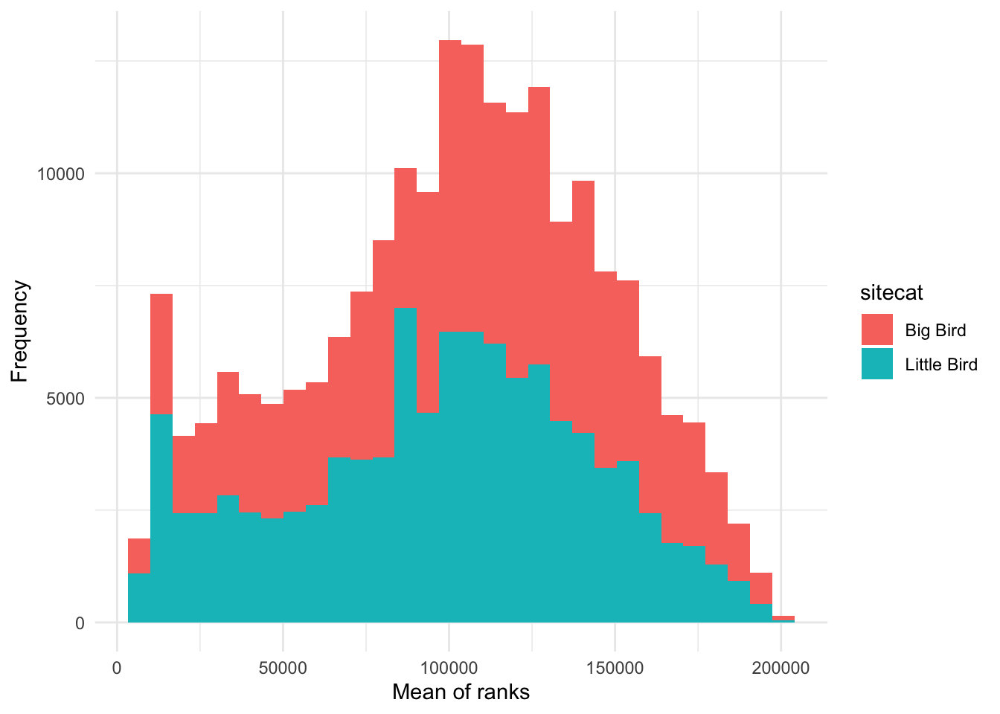
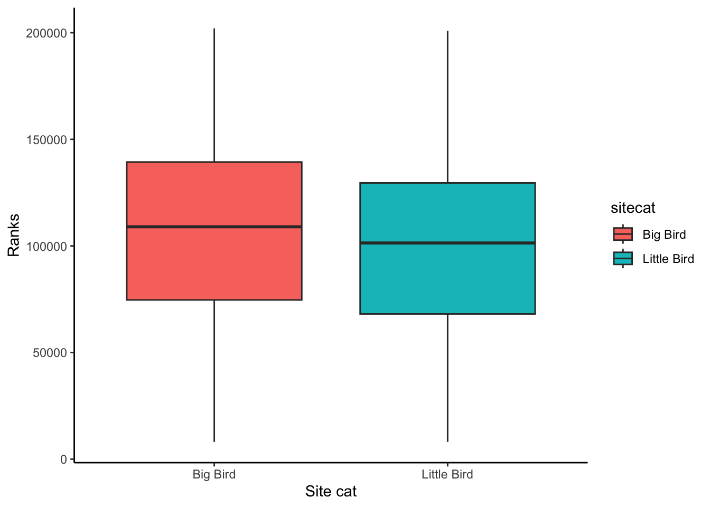
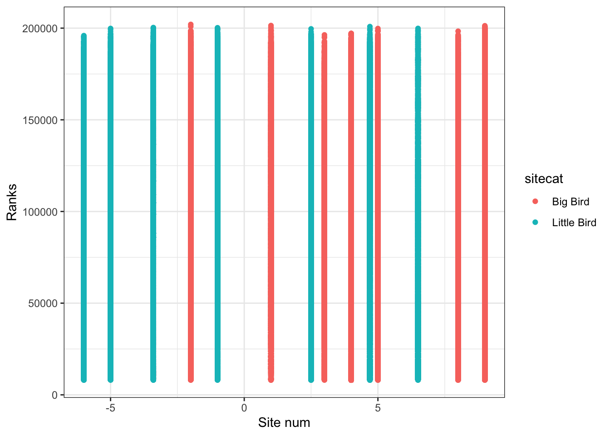
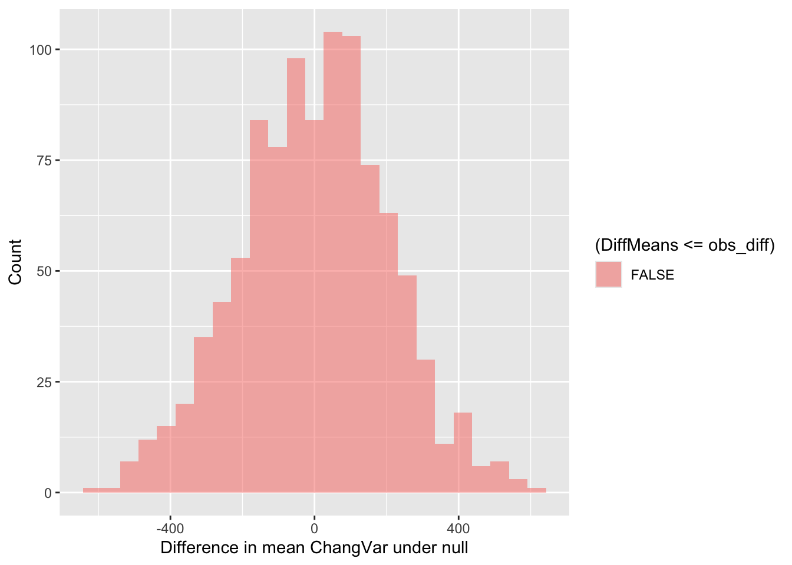
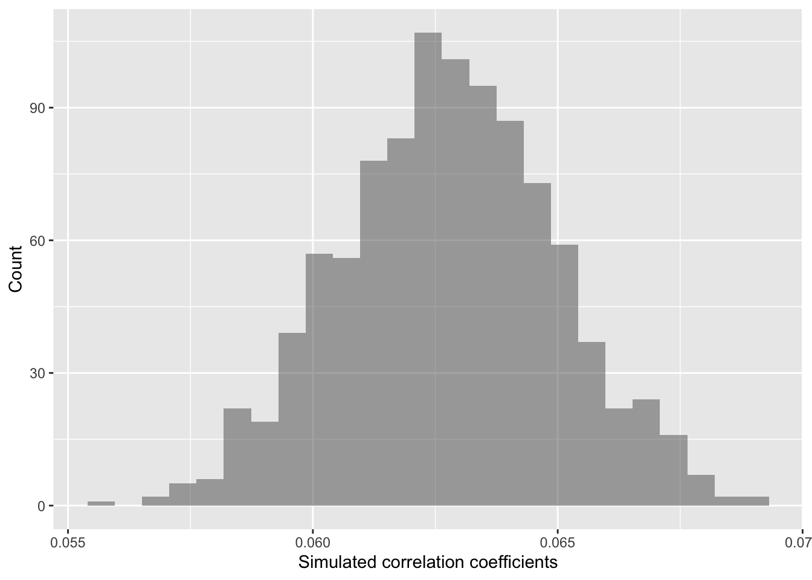

This page provides a demonstration on using R and
shuffling our data to analyze the class bioacoustic dataset to generate
results for your group presentation. You are welcome to either follow
along with the text and copy-paste the code into the console
or read through and then copy the whole script into a
new R script.
Please start by logging into sso.rstudio.cloud/pomona. Once
you’ve logged in, you should see the option to open the
EA 30.1 - Fall 2022 workspace. You can also access the
EA 30.1 - Fall 2022 workspace at this link.
At the workspace, you should then see the “Assignment”
Bioaco. Please click on that Assignment. Here is a direct link to
the Bioaco project, but it may not work if this is the
first time in a while that you’re logging into RStudio.Cloud. If it
doesn’t work, no worries - just log in through the sso.rstudio.cloud/pomona
link.
This table below shows the hypotheses for each group:
| Group | Hypotheses |
|---|---|
| 1 | There is greater species richness as sites are further from pHake Lake. |
| 2 | ACI is higher during the morning periods of data collection compared to night |
| 3 | Species richness will be lower during the month of November (as compared to October) due to colder temperatures |
| 4 | ACI is higher in areas with trees and shrubs, as compared to open areas |
| 5 | ACI will increase as distance from the edge of the field station and nonnatural influences increases. |
| 6 | Biodiversity of bird and insect species is positively correlated to distance from human settlements (biodiversity increases and distance from human settlements increases) |
Below, we will start by loading packages that we’ll need.
### Load packages
library("ggplot2") # plotting functions
library("dplyr") # data wrangling functions
library("readr") # reading in tables, including ones online
library("mosaic") # shuffle (permute) our dataNext, we will pull in our data and inspect it.
### Load in dataset
soundDF <- readr::read_tsv("https://github.com/EA30POM/site/blob/main/data/bioacousticF22.tsv?raw=true") # read in spreadsheet from its URL and store in soundDF
### Look at the first few rows
soundDF## # A tibble: 85,654 x 7
## unit date time ACI SR DayNight Month
## <chr> <date> <chr> <dbl> <dbl> <chr> <chr>
## 1 CBio3 2022-10-12 18H 0M 0S 152. 1 Night October
## 2 CBio3 2022-10-12 18H 1M 0S 153. 1 Night October
## 3 CBio3 2022-10-12 18H 2M 0S 152. 1 Night October
## 4 CBio3 2022-10-12 18H 3M 0S 151. 1 Night October
## 5 CBio3 2022-10-12 18H 4M 0S 152. 1 Night October
## 6 CBio3 2022-10-12 18H 5M 0S 151. 1 Night October
## 7 CBio3 2022-10-12 18H 6M 0S 154. 2 Night October
## 8 CBio3 2022-10-12 18H 7M 0S 152. 2 Night October
## 9 CBio3 2022-10-12 18H 8M 0S 153. 0 Night October
## 10 CBio3 2022-10-12 18H 9M 0S 152. 2 Night October
## # … with 85,644 more rows### Look at the first few rows in a spreadsheet viewer
soundDF %>% head() %>% View()We see that there are the following columns:
unit: Which AudioMoth collected the recordings
date: The date of the recordingtime: The time of the recordingACI: The Acoustic Complexity Index of the recording
SR: The species richness in every 30 second
recordingDayNight: Whether the recording occurred in the day or
at nightMonth: A variable that notes if the recording was taken
in October or November.Here, I am going to do two tasks. I am going to create a dummy column
of data that takes the average of the ranks of SR and
ACI to illustrate different analyses. I am also going to
create a data table that tells us different characteristics of each
AudioMoth unit to illustrate how hypotheses that have some
relationship with distance or tree cover (which would be informed by the
location of the unit) could proceed.
### Creating a data table for the 14 units
# Each row is a unit and columns 2 and 3 store
# values for different attributes about these units
unit_table <- tibble::tibble(
unit = paste("CBio",c(1:14),sep=""), # create CBio1 to CBio14 in ascending order
sitecat = c("Big Bird","Big Bird","Big Bird","Big Bird","Big Bird",
"Big Bird","Big Bird","Little Bird","Little Bird","Little Bird",
"Little Bird","Little Bird","Little Bird","Little Bird"), # categorical site variable, like degree of tree cover
sitenum = c(1,5,8,9,4,
3,-2,-5,-1,-6,
2.5,-3.4,6.5,4.7) # numeric site variable, like distance
)View(unit_table) # take a look at this table to see if it lines up with what you expect### Creating a dummy variable for example analyses below
soundDF <- soundDF %>%
mutate(ChangVar =(rank(ACI)+ rank(SR))/2)Sometimes, data that we want to combine for analyses are separated
across different spreadsheets or data tables. How can we combine these
different data tables? Join operations (FMI
on joining two data tables) offer a way to merge data
across multiple data tables (also called data frames in R
parlance).
In this case, we want to add on the site features of the 14 AudioMoth
units to the bioacoustic data. I am going to use the
left_join operation to add on the unit characteristics
defined in unit_table above.
### Adding on the site features of the 14 AudioMoth units
soundDF <- soundDF %>%
left_join(unit_table, by=c("unit"="unit")) # Join on the data based on the value of the column unit in both data tablesBelow, I provide fully-worked examples of different ways of
inspecting your data and performing analyses assuming that
ChangVar is the variable of interest. In applying
this code to your own data, you will want to think about what variable
name should replace ChangVar in the commands
below. For example, you would change
tapply(soundDF$ChangVar, soundDF$sitecat, summary) to
tapply(soundDF$ResponseVariable, soundDF$sitecat, summary)
where ResponseVariable is the variable you’re
analyzing.
Let’s start with exploratory data analysis where you calculate summary statistics and visualize your variable.
### Calculate summary statistics for ChangVar
### for each sitecat
tapply(soundDF$ChangVar, soundDF$sitecat, summary) ## $`Big Bird`
## Min. 1st Qu. Median Mean 3rd Qu. Max.
## 5802 30426 44778 43324 56500 85070
##
## $`Little Bird`
## Min. 1st Qu. Median Mean 3rd Qu. Max.
## 5801 27717 44828 42338 56858 85048 # use sitecat as the grouping variable
# for ChangVar and then summarize ChangVar
# for each sitecat (site characteristics)How would I visualize the values of ChangVar? I could
use something like a histogram and color the values differently for the
categories in sitecat.
### Creating a histogram
# Instantiate a plot
p <- ggplot(soundDF, aes(x=ChangVar,fill=sitecat))
# Add on a histogram
p <- p + geom_histogram()
# Change the axis labels
p <- p + labs(x="Mean of ranks",y="Frequency")
# Change the plot appearance
p <- p + theme_minimal()
# Display the final plot
p
Alternatively, I could create a boxplot to visualize the distribution
of values in ChangVar with two boxplots for each value of
sitecat.
### Creating a boxplot
# Instantiate a plot
p <- ggplot(soundDF, aes(x=sitecat, y=ChangVar, fill=sitecat))
# Add on a boxplot
p <- p + geom_boxplot()
# Change the axis labels
p <- p + labs(x="Site cat",y="Ranks")
# Change the plot appearance
p <- p + theme_classic()
# Display the final plot
p
Finally, if I am interested in the relationship between two or more numeric variables, I can use a scatterplot to visualize each pair of data.
### Creating a scatterplot
# Instantiate a plot
p <- ggplot(soundDF, aes(x=sitenum, y=ChangVar, color=sitecat))
# Add on a scatterplot
p <- p + geom_point()
# Change the axis labels
p <- p + labs(x="Site num",y="Ranks")
# Change the plot appearance
p <- p + theme_bw()
# Display the final plot
p
The code below shows you how to do different types of analyses.
Let’s say I am interested in determining
if Big Bird sites tend to have higher ChangVar ranks. This
sounds like I want to see if there is a clear difference in the mean
values of ChangVar for the Big Bird vs. Little Bird sites.
We can start by calculating the mean difference we observe.
mean( ChangVar ~ sitecat, data = soundDF , na.rm=T) # show mean ChangVar values for the Big and Little Bird sites, removing missing data## Big Bird Little Bird
## 43324.07 42338.25obs_diff <- diff( mean( ChangVar ~ sitecat, data = soundDF , na.rm=T)) # calculate the difference between the means and store in a variable called "obs_diff"
obs_diff # display the value of obs_diff## Little Bird
## -985.8256OK, so the mean difference in mean values between Big and Little Bird sites is -985.83. Is this difference meaningful though? We can test that by specifying an opposing null hypothesis.
In this case, our null hypothesis would be that there is no
difference in ChangVar across sitecat.
Logically, if there is a meaningful difference, then if we shuffle our data around, that should lead to different results than what we see. That is one way to simulate statistics to test the null hypothesis. And specifically, in this case, we would expect to see our observed difference is much larger (or much smaller) than most of the simulated values.
Let’s shuffle the data 1000 times according to the null hypothesis
(where sitecat doesn’t matter for influencing
ChangVar) and see what that means for the distribution of
mean ChangVar differences between Big Bird and Little Bird
sites.
### Create random differences by shuffling the data
randomizing_diffs <- do(1000) * diff( mean( ChangVar ~ shuffle(sitecat),na.rm=T, data = soundDF) ) # calculate the mean in ChangVar when we're shuffling the site characteristics around 1000 times
# Clean up our shuffled data
names(randomizing_diffs)[1] <- "DiffMeans" # change the name of the variable
# View first few rows of data
head(randomizing_diffs)## DiffMeans
## 1 -158.167756
## 2 3.483474
## 3 37.037744
## 4 -219.122058
## 5 -34.465019
## 6 238.468001Now we can visualize the distribution of simulated differences in the
mean values of ChangVar at the Big and Little Bird sites
versus our observed difference in means. Note that the observed
difference was less than 0. So in this case, more extreme data would be
more extremely small. Thus, we need to use <= below in
the fill = ~ part of the command.
gf_histogram(~ DiffMeans, fill = ~ (DiffMeans <= obs_diff),
data = randomizing_diffs,
xlab="Difference in mean ChangVar under null",
ylab="Count")
In the end, how many of the simulated mean differences were more extreme than the value we observed? This is a probability value or a p-value for short.
# What proportion of simulated values were larger than our observed difference
prop( ~ DiffMeans <= obs_diff, data = randomizing_diffs) # ~0.0 was the observed difference value - see obs_diff## prop_TRUE
## 0Wow! Our observation was really extreme. The p-value we’ve calculated is 0. The simulated mean differences were never more extreme(ly small) than our observed difference in means. Based on this value, if we were using the conventional \(p\)-value (probability value) of 0.05, we would conclude that because this simulated \(p\)-value <<< 0.05, that we can reject the null hypothesis.
Now let’s say that you’re interested in comparing
ChangVar, a numeric variable, against another numeric
variable like sitenum. One way to do that is to calculate a
confidence interval for their correlation coefficient.
How would I determine if there is a non-zero correlation between two variables or that two variables are positively correlated? I can again start by calculating the observed correlation coefficient for the data.
### Calculate observed correlation
obs_cor <- cor(ChangVar ~ sitenum, data=soundDF, use="complete.obs") # store observed correlation in obs_cor of ChangVar vs sitenum
obs_cor # print out value## [1] 0.001082036Let’s say that I’m interested in determining if ChangVar
is actually positively correlated with sitenum. We can test
this against the opposing null hypothesis. Our null hypothesis could be
that the correlation coefficient is actually 0.
As before though, how do I know that my correlation coefficient of 0 is significantly different from 0? We can tackle this question by simulating a ton of correlation coefficient values from our data by shuffling it!
In this case, the shuffling here lets us estimate the variation in the correlation coefficient given our data. So we are curious now if the distribution of simulated values does or does not include 0 (that is, is it clearly \(< 0\) or \(> 0\)?).
### Calculate correlation coefs for shuffled data
randomizing_cor <- do(1000) * cor(ChangVar ~ sitenum,
data = resample(soundDF),
use="complete.obs")
# Shuffle the data 1000 times
# Calculate the correlation coefficient each time
# By correlating ChangVar to sitenum from the
# data table soundDFWhat are the distribution of correlation coefficients that we see when we shuffle our data?
quantiles_cor <- qdata( ~ cor, p = c(0.025, 0.975), data=randomizing_cor) # calculate the 2.5% and 97.5% quantiles in our simulated correlation coefficient data (note that 97.5-2.5 = 95!)
quantiles_cor # display the quantiles## 2.5% 97.5%
## -0.005408486 0.007455075The values above give us a 95% confidence interval estimate for our correlation coefficient!
Do we clearly see that our correlation coefficient distribution does or doesn’t include 0?
gf_histogram(~ cor,
data = randomizing_cor,
xlab="Simulated correlation coefficients",
ylab="Count")
In this case, our simulated correlation coefficient includes 0 in its
95% simulated confidence interval. We can also see this in the plot. So
given these data, we cannot reject the null hypothesis. There is not
sufficiently strong data that the mean ranks in ChangVar
associate with site characteristics in sitenum in any clear
way.
The segment below can be directly copied and pasted into the code editor in RStudio Cloud.
###=========================================
### 2: Load packages
###=========================================
library("ggplot2") # plotting functions
library("dplyr") # data wrangling functions
library("readr") # reading in tables, including ones online
library("mosaic") # shuffle (permute) our data
###=========================================
### 2: Preparing data
###=========================================
### Load in dataset
soundDF <- readr::read_tsv("https://github.com/EA30POM/site/blob/main/data/bioacousticF22.tsv?raw=true") # read in spreadsheet from its URL and store in soundDF
### Look at the first few rows
soundDF
### Look at the first few rows in a spreadsheet viewer
soundDF %>% head() %>% View()
### Creating a data table for the 14 units
# Each row is a unit and columns 2 and 3 store
# values for different attributes about these units
unit_table <- tibble::tibble(
unit = paste("CBio",c(1:14),sep=""), # create CBio1 to CBio14 in ascending order
sitecat = c("Big Bird","Big Bird","Big Bird","Big Bird","Big Bird",
"Big Bird","Big Bird","Little Bird","Little Bird","Little Bird",
"Little Bird","Little Bird","Little Bird","Little Bird"), # categorical site variable, like degree of tree cover
sitenum = c(1,5,8,9,4,
3,-2,-5,-1,-6,
2.5,-3.4,6.5,4.7) # numeric site variable, like distance
)
View(unit_table) # take a look at this table to see if it lines up with what you expect
### Creating a dummy variable for example analyses below
soundDF <- soundDF %>%
mutate(ChangVar =(rank(ACI)+ rank(SR))/2)
### Adding on the site features of the 14 AudioMoth units
soundDF <- soundDF %>%
left_join(unit_table, by=c("unit"="unit")) # Join on the data based on the value of the column unit in both data tables
###=========================================
### 3: Data exploration
###=========================================
### Calculate summary statistics for ChangVar
### for each sitecat
tapply(soundDF$ChangVar, soundDF$sitecat, summary)
### Creating a histogram
# Instantiate a plot
p <- ggplot(soundDF, aes(x=ChangVar,fill=sitecat))
# Add on a histogram
p <- p + geom_histogram()
# Change the axis labels
p <- p + labs(x="Mean of ranks",y="Frequency")
# Change the plot appearance
p <- p + theme_minimal()
# Display the final plot
p
### Creating a boxplot
# Instantiate a plot
p <- ggplot(soundDF, aes(x=sitecat, y=ChangVar, fill=sitecat))
# Add on a boxplot
p <- p + geom_boxplot()
# Change the axis labels
p <- p + labs(x="Site cat",y="Ranks")
# Change the plot appearance
p <- p + theme_classic()
# Display the final plot
p
### Creating a scatterplot
# Instantiate a plot
p <- ggplot(soundDF, aes(x=sitenum, y=ChangVar, color=sitecat))
# Add on a scatterplot
p <- p + geom_point()
# Change the axis labels
p <- p + labs(x="Site num",y="Ranks")
# Change the plot appearance
p <- p + theme_bw()
# Display the final plot
p
###=========================================
### 4: Statistical analysis
###=========================================
###*************
###* 4.1: Difference in means
###*************
mean( ChangVar ~ sitecat, data = soundDF , na.rm=T) # show mean ChangVar values for the Big and Little Bird sites, removing missing data
obs_diff <- diff( mean( ChangVar ~ sitecat, data = soundDF , na.rm=T)) # calculate the difference between the means and store in a variable called "obs_diff"
obs_diff # display the value of obs_diff
### Create random differences by shuffling the data
randomizing_diffs <- do(1000) * diff( mean( ChangVar ~ shuffle(sitecat),na.rm=T, data = soundDF) ) # calculate the mean in ChangVar when we're shuffling the site characteristics around 1000 times
# Clean up our shuffled data
names(randomizing_diffs)[1] <- "DiffMeans" # change the name of the variable
# View first few rows of data
head(randomizing_diffs)
# Plot the simulated vs. observed value
# Think about the direction in fill! <= or =>
gf_histogram(~ DiffMeans, fill = ~ (DiffMeans <= obs_diff),
data = randomizing_diffs,
xlab="Difference in mean ChangVar under null",
ylab="Count")
# What proportion of simulated values were larger than our observed difference
prop( ~ DiffMeans <= obs_diff, data = randomizing_diffs) # ~0.0 was the observed difference value - see obs_diff
###*************
###* 4.2: Correlation coefficients
###*************
### Calculate observed correlation
obs_cor <- cor(ChangVar ~ sitenum, data=soundDF, use="complete.obs") # store observed correlation in obs_cor of ChangVar vs sitenum
obs_cor # print out value
### Calculate correlation coefs for shuffled data
randomizing_cor <- do(1000) * cor(ChangVar ~ sitenum,
data = resample(soundDF),
use="complete.obs")
# Shuffle the data 1000 times
# Calculate the correlation coefficient each time
# By correlating ChangVar to sitenum from the
# data table soundDF
quantiles_cor <- qdata( ~ cor, p = c(0.025, 0.975), data=randomizing_cor) # calculate the 2.5% and 97.5% quantiles in our simulated correlation coefficient data (note that 97.5-2.5 = 95!)
quantiles_cor # display the quantiles
gf_histogram(~ cor,
data = randomizing_cor,
xlab="Simulated correlation coefficients",
ylab="Count")